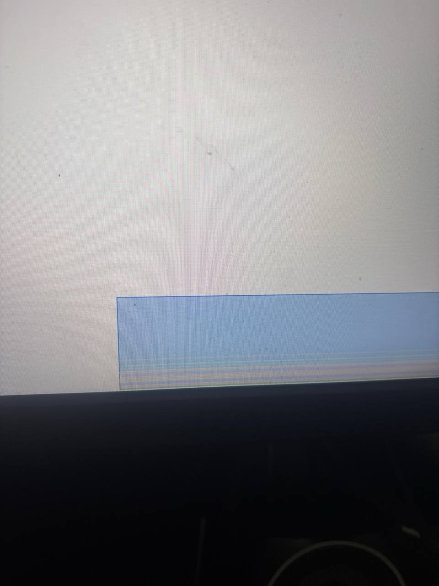

Ну и гвоздь программы!
Мой монитор скоро покинет этот бренный мир
Я ненавижу msi всей душой за то, что монитор который стоил 18 тысяч отправляется в вальгаллу спустя всего 2 года.
Я ненавижу msi всей душой за то, что монитор который стоил 18 тысяч отправляется в вальгаллу спустя всего 2 года.